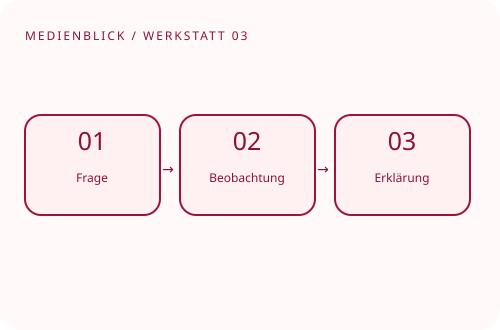

MEDIENBLICK · Chemie · Projektvorlage
Erstellt zu einem freigegebenen Unterrichtsexperiment eine Erklärung und vergleicht Video und gezeichnete Bildfolge.

Lernprodukt: Erklärvideo und fachliches Protokoll
Digitales Werkzeug: Aufnahme, Schnitt und Zeitlupe
Direkt ausfüllen und mit Strg+P / ⌘P drucken oder als PDF speichern. Eingaben werden nicht gespeichert oder übertragen.
Planungsbeispiel. Thema, Sicherheit, Plätze und Bewertung mit der Fachlehrkraft abstimmen.